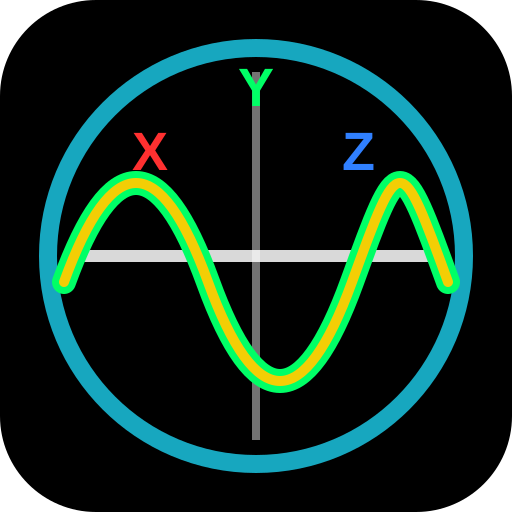

Scientific HUD
Copyright © 2026 German Vargas. All rights reserved.
This project, concept, interface, and software implementation were created by German Vargas with support from AI-assisted development tools.
Unauthorized copying, redistribution, modification, publication, sale, or incorporation into other products is not permitted without written permission.
Motion Access
Scientific HUD uses device heading, tilt, roll, and acceleration data to draw the display.
Pinch or press Enter
Settings
Scientific HUD
HUD paused.